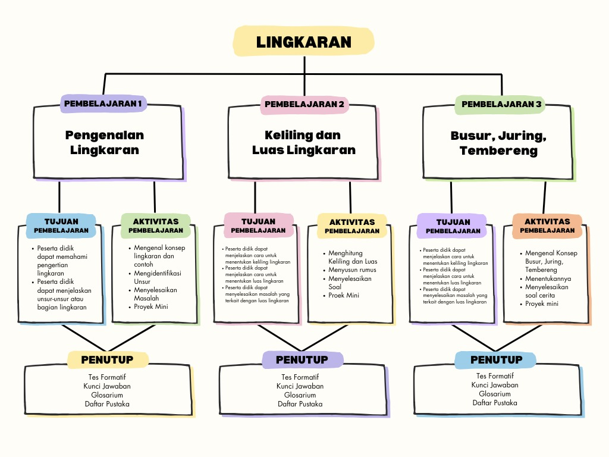

Peta Konsep Lingkaran

Gambar di atas menunjukkan keterkaitan konsep-konsep penting dalam lingkaran, mulai dari unsur-unsur dasar hingga penerapannya dalam perhitungan keliling dan luas.

Gambar di atas menunjukkan keterkaitan konsep-konsep penting dalam lingkaran, mulai dari unsur-unsur dasar hingga penerapannya dalam perhitungan keliling dan luas.